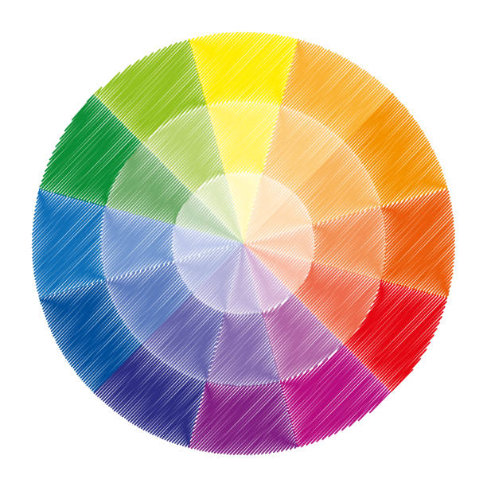

When picking the right colors, you should pick a different color for each piece of clothing giving it diversity and a to spice it up a little, making your outift a lot more
Going along with trends can be a quick and easy but good way to create yourself an outfit. Since most trends follow what is popular, this may also double and might spark popularity.
Wearing clothes that don't fit the occasion can make you stand out and can make you appear out of place and look unique. Wearing overly formal or casual clothing to an event can make you noticed which can help boost your confidence and and can help you enjoy the occasion even more.